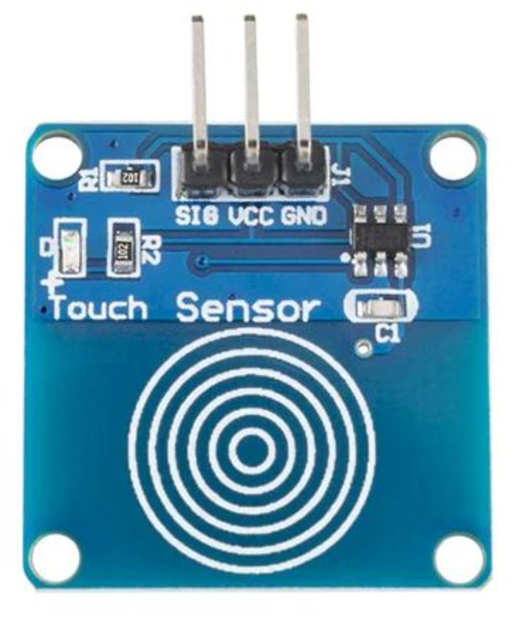

TTP223 Touch Sensor

The TTP223 digital touch sensor is a small, inexpensive capacitive touch switch module commonly used in Arduino, Raspberry Pi, and other microcontroller projects as a modern alternative to mechanical push buttons. You can find it on eBay for under $1 USD.
Here’s a breakdown of its key features and how it works:
Overview
- Core IC: TTP223 (from Tontek) — a capacitive touch sensing controller.
- Form factor: Small PCB (\~24 mm × 24 mm) with a copper pad (sensor area), a TTP223 IC, and a few passive components.
- Function: Detects when a finger (or other conductive object) is near the pad by measuring changes in capacitance, then outputs a digital HIGH or LOW signal.
Main Features
-
Operating Voltage:
-
Typically 2.0 V – 5.5 V, so it works directly with both 3.3 V and 5 V logic systems.
-
Output Signal:
-
Digital — HIGH (active) or LOW (inactive).
-
By default, the output is LOW when untouched and HIGH when touched, but some versions allow reversing this.
-
Touch Sensitivity:
-
Triggered by direct finger contact or by touching through thin non-metallic materials (e.g., plastic, glass, acrylic).
-
Typical sensing distance: \~5 mm (adjustable by changing PCB pad size or circuit values).
-
Modes of Operation: (Controlled by solder jumper pads marked A and B on the PCB)
-
Momentary (default): Output stays HIGH only while touching.
- Toggle: Output changes state each time you touch (touch-on, touch-off).
-
Active High / Active Low: Selectable logic polarity.
-
Low Power Consumption:
-
Two modes: Low-power mode (\~1 µA standby) or Fast mode for faster response (\~3 mA standby).
-
Response time typically \~60 ms in low-power mode, \~6 ms in fast mode.
-
Durability & Reliability:
-
No moving parts → longer lifespan than mechanical switches.
- Resistant to dust, moisture, and vibration.
Pinout
| Pin | Label | Description |
|---|---|---|
| 1 | GND | Ground |
| 2 | VCC | Power supply (2–5.5 V) |
| 3 | OUT | Digital output signal |
Typical Uses
- Replacing mechanical buttons in projects.
- Hidden switches under a non-metallic surface.
- Lamp touch controls.
- Interactive exhibits or kiosks.
- Wearable electronics.
Example MicroPython Code
1 2 3 4 5 6 7 8 9 10 11 | |
Any MicroPython board with an external LED
1 2 3 4 5 6 7 8 9 10 11 12 13 | |
Notes
TTP223 output is typically HIGH when touched (default board config). If your board is configured “active-low,” just invert: led.value(1 - touch.value()).
No debouncing is necessary—TTP223 already conditions the signal. If you need extra smoothing, increase the delay or add a simple moving average.
How It Works
The TTP223 chip periodically charges and discharges the touch pad and measures the time constant. When a finger is nearby, the capacitance increases slightly, slowing the charge/discharge cycle. The chip detects this change and drives the OUT pin accordingly.